Algoritmos de grafos aplicados a WSN con restricción de batería
Jean Carlo Aucapina · Universidad de Cuenca · 2026
Red de sensores IoT monitorea caudal de agua en ríos y canales. Cada transmisión consume mAh de batería limitada.
❶ ¿Cuál es el camino con menor número de saltos al gateway?
❷ ¿Qué ruta alternativa consume menos batería?
❸ ¿Qué estrategia preserva la red más tiempo?
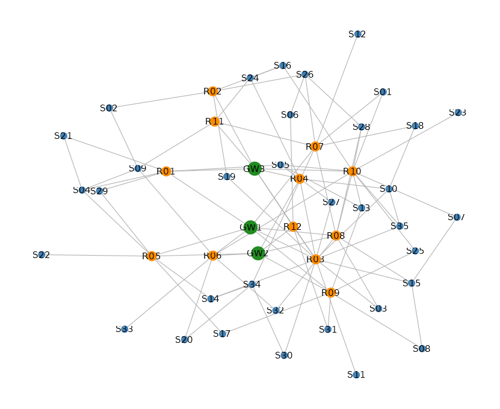
Árbol con redundancias. Aristas sensor–sensor y repetidor–repetidor crean rutas alternativas realistas.
peso(u→v) = base_tx × (100/bat_v) × ruido
Nodos con poca batería tienen mayor costo de relay.
| Parámetro | Valor |
|---|---|
| Nodos totales | 50 |
| Aristas | 96 |
| Rango peso | 0.5 – 3 mAh |
| Gateways | 3 (red eléctrica) |
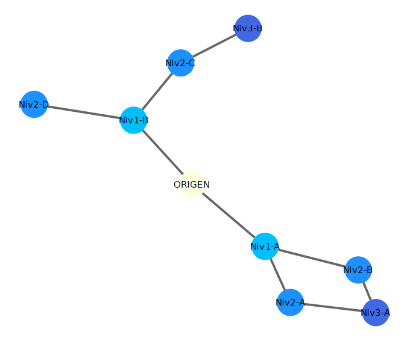
Explora nivel a nivel. El primer camino encontrado es de mínimo número de saltos.
Complejidad: O(V + E) · Garantía: mínimos saltos
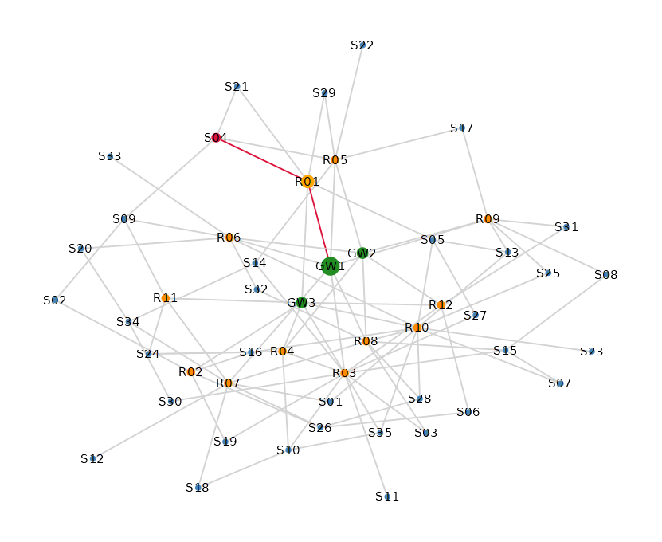
Todos los sensores alcanzan un gateway en exactamente 2 saltos.
S-04 → R-01 → GW-1
Saltos: 2 · Costo: 5.575 mAh
| Sensor | Saltos | Bat.Med% | Gateway |
|---|---|---|---|
| S-01 | 2 | 75.0 | GW-1 |
| S-02 | 2 | 75.0 | GW-3 |
| S-03 | 2 | 71.7 | GW-1 |
| … todos 35 sensores en 2 saltos | |||
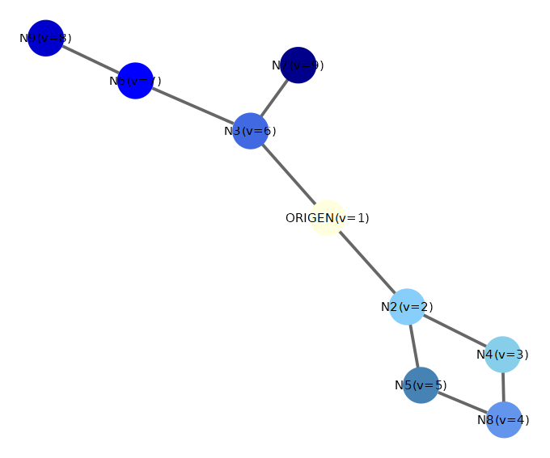
Explora cada rama hasta el máximo fondo antes de retroceder. Mapea todo el espacio de rutas posibles.
Complejidad: O(V + E) · Ventaja: encuentra TODAS las rutas
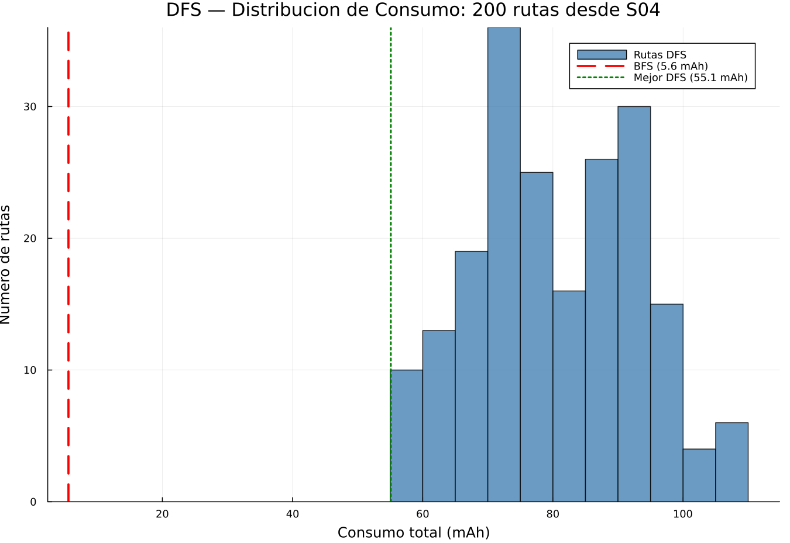
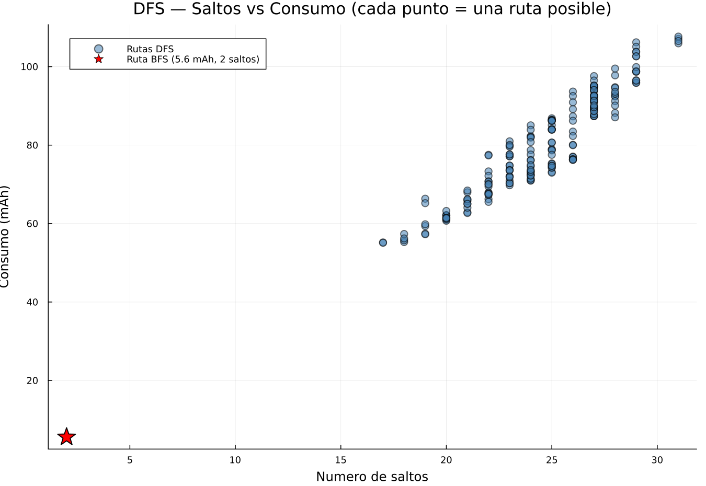
| Métrica | Valor |
|---|---|
| Rutas encontradas | 200 (límite) |
| Costo mínimo | 55.102 mAh |
| Costo máximo | 107.664 mAh |
| Costo promedio | 80.444 mAh |
| Saltos mínimos | 17 |
| Saltos máximos | 31 |
S-04 → S-09 → S-02 → R-02 → S-16 → S-24 →
R-04 → S-10 → S-18 → R-07 → S-01 → R-10 →
S-05 → S-13 → R-09 → S-17 → R-05 → GW-2
17 saltos · 55.102 mAh
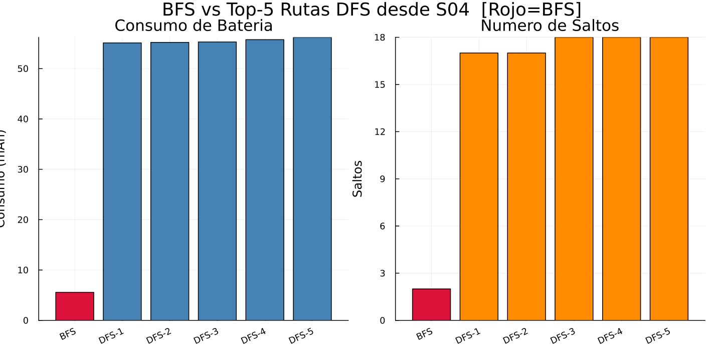
| Criterio | BFS | DFS mejor |
|---|---|---|
| Saltos | 2 | 17 |
| Costo (mAh) | 5.575 | 55.102 |
| Rutas evaluadas | 1 | 200 |
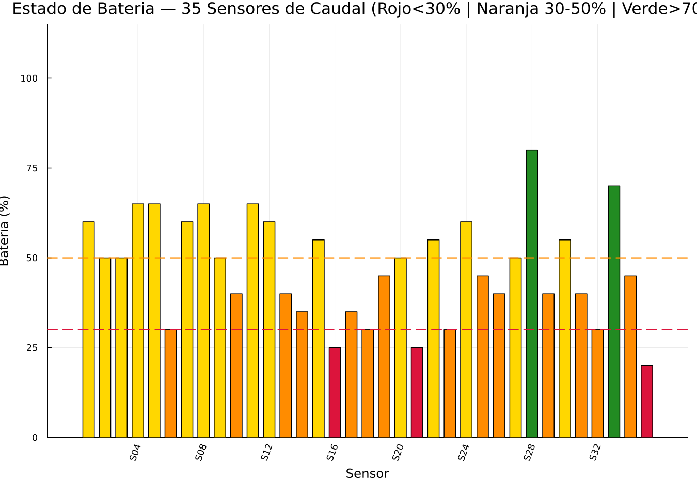
| Sensor | Batería | Saltos GW |
|---|---|---|
| S-35 | 20.0% | 2 |
| S-16 | 25.0% | 2 |
| S-21 | 25.0% | 2 |
Cada nodo reenvía a todos sus vecinos. Como una ola — se expande en todas direcciones.
No requiere tabla de rutas. Riesgo: tormenta de broadcasts.
El paquete sigue una sola ruta calculada al gateway. Flujo controlado.
Requiere tabla de rutas. Alta eficiencia energética.
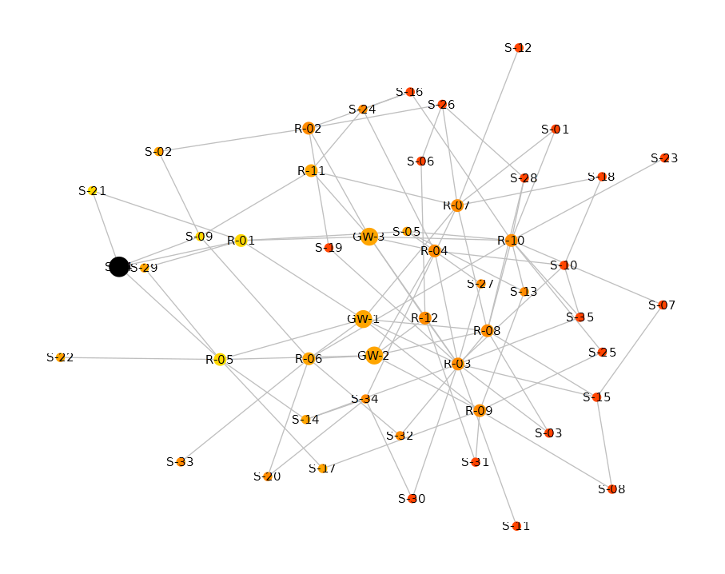
| Métrica | BFS | Flood |
|---|---|---|
| Saltos al GW | 2.00 | 2.00 |
| Transmisiones | 2 | 192 |
| Nodos activos | 3 | 49/50 |
| Consumo (mAh) | 5.024 | 574.314 |
| Overhead tx | — | +9 500% |
| Overhead mAh | — | +11 331% |
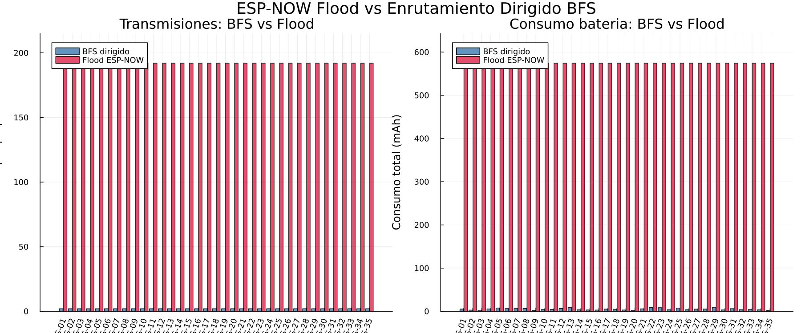
| Situación | Modo | Razón |
|---|---|---|
| Transmisión periódica de caudal | BFS dirigido | Bajo consumo, ruta estable |
| Descubrimiento inicial (setup) | Flood | Sin tabla de rutas aún |
| Alerta de emergencia (crecida) | Flood | Entrega garantizada |
| Auditoría de resiliencia | DFS | Mapea todo el espacio de rutas |
| Red con baterías críticas <30% | BFS dirigido | Flood las agotaría en pocas sesiones |
| Criterio | BFS | DFS | Flood |
|---|---|---|---|
| Saltos GW | 2 | 17 | 2 |
| mAh | 5.0 | 55.1 | 574.3 |
| Transmisiones | 2 | 17 | 192 |
| Sin tabla rutas | No | No | Sí |
| Escalabilidad | Alta | Media | Baja |
¿Qué estrategia preserva la red más tiempo bajo 120 rondas de transmisión continua?
BFS — rutas de 2 saltos. Solo 2 nodos gastan batería por transmisión.
DFS — elige ruta de menor costo mAh. Puede ser de 10–20 saltos. Más nodos participan → mayor desgaste total.
| Métrica | BFS | DFS |
|---|---|---|
| Sensores vivos al final | 23 / 35 | 20 / 35 |
| Batería media final (vivos) | 33.6% | 28.5% |
| Nodos agotados (sensores+reps) | 23 | 25 |
| Ronda 1er nodo muerto | 4 | 1 |
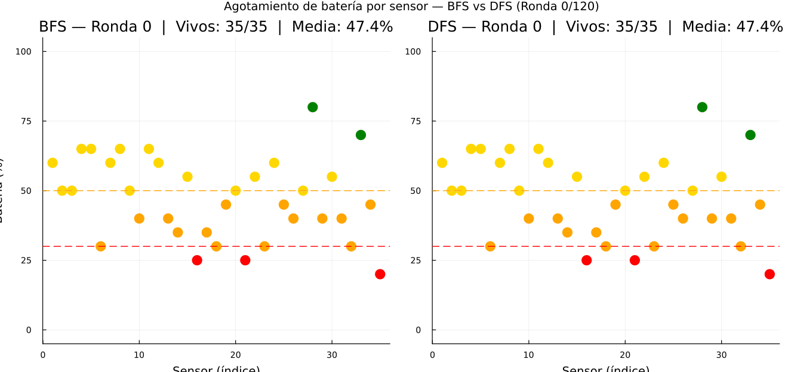
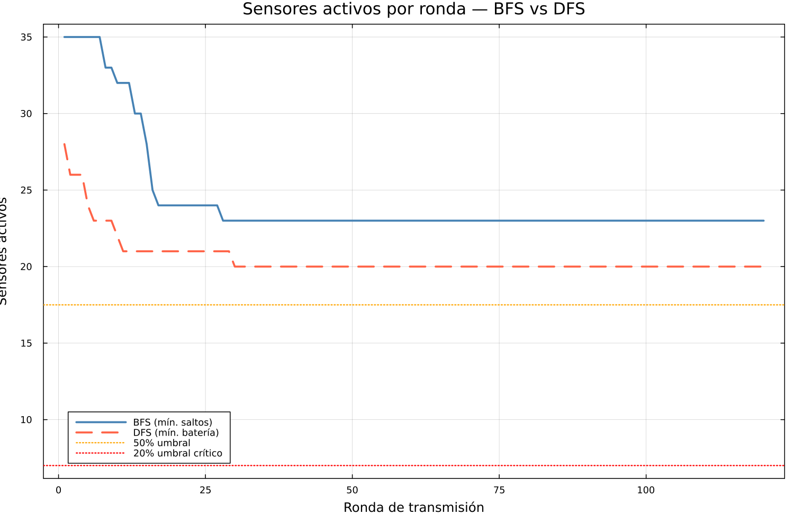
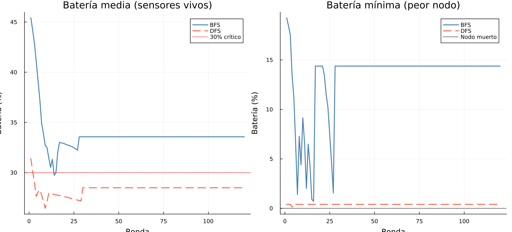
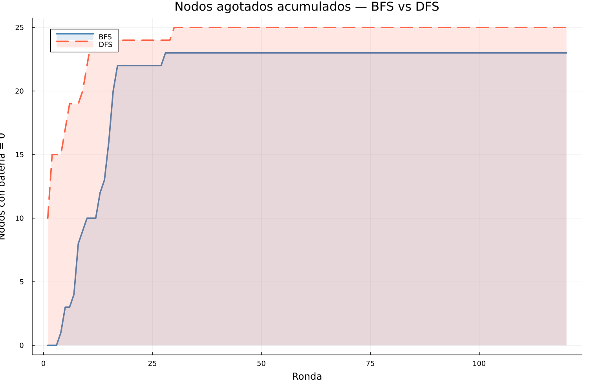
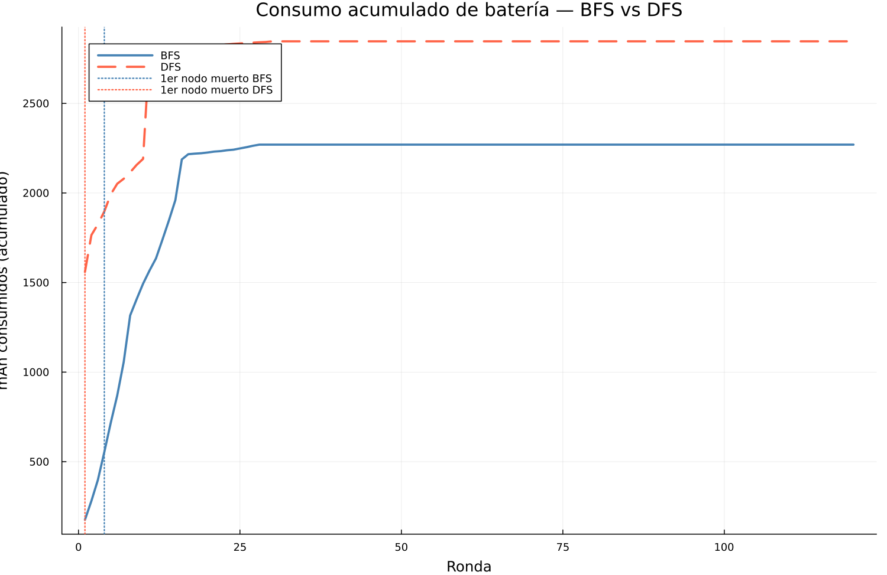
Si repetidores centrales ya tienen batería crítica al inicio, BFS los sobrecargaría (siempre los elige por mínimos saltos). DFS distribuiría el tráfico hacia nodos alternativos.
Rondas clave 1→10→30→60→90→110 · Nodos coloreados por nivel de batería · Aristas activas resaltadas
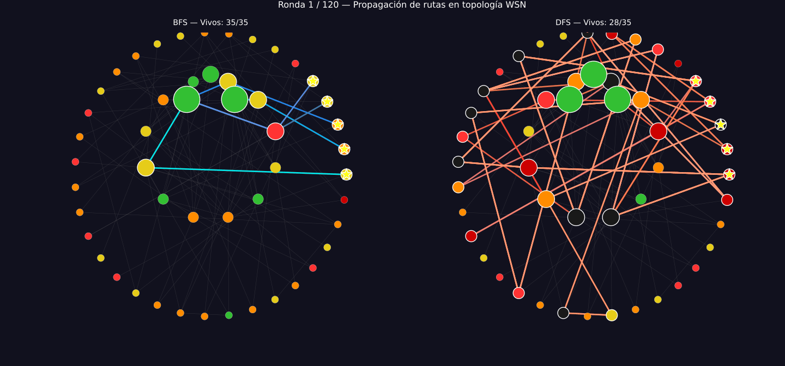
BFS — rutas cian, 2 saltos
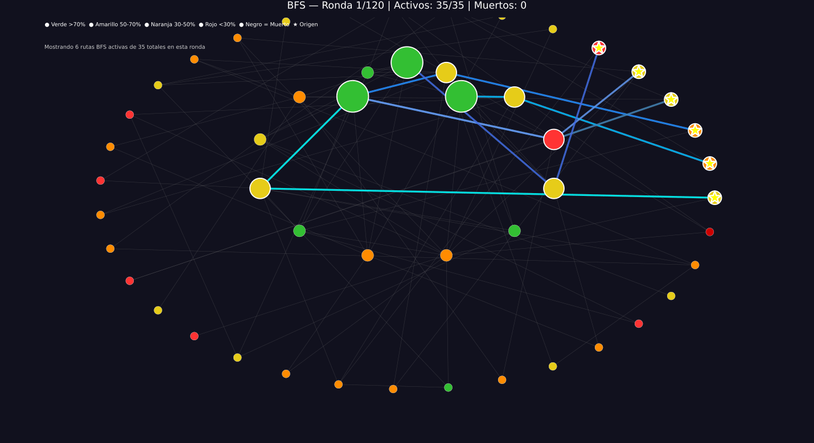
DFS — rutas rojas, más sinuosas
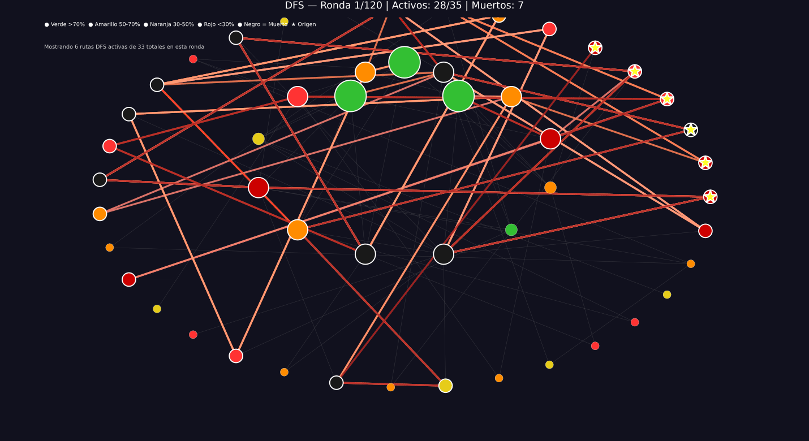
Jean Carlo Aucapina · jean.aucapina@ucuenca.edu.ec
BFS
Mínimos saltos
DFS
Auditoría rutas
Flood
Solo emergencias
Julia
Graphs.jl
Universidad de Cuenca · 2026